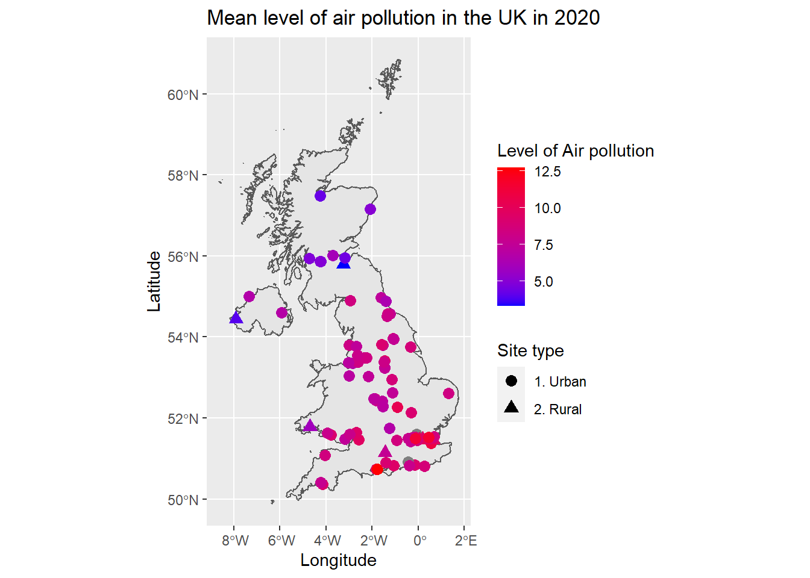

In this tutorial, we will see how to extract and work with a data set from the Department for Environment Food & Rural Affairs of the Government of the United Kingdom that measures the air pollution level across its territory. From the Data page, one can download data grouped by many different characteristics. However, to make it easier, we will use the openair package to retrieve the UK air pollution data.
openair packageOne can easily install it by running the following code
if (!require(openair)) {
install.packages('openair')
library(openair)
}Alternatively, one can also refer to the the openair’s GitHub page, and install it via the devtools package.
From the UK air pollution website, one can choose to work with many different Monitoring Networks. For this tutorial, we will use data from the Automatic Urban and Rural Network (AURN). In particular, we will study the concentration of \(\text{PM}_{2.5}\) (tiny particles that are two and one half microns or less in width) in the air \((\mu\text{g}/\text{m}^3)\) throughout the year 2020.
To do this let’s also use the tidyverse package.
library(tidyverse)Firstly, one can check which sort of data is available for each Monitoring Network by using the ìmportMeta() function.
meta_data <- importMeta(source = 'aurn', all = TRUE)
head(meta_data, 3)## # A tibble: 3 x 13
## code site site_type latitude longitude variable Parameter_name
## <chr> <chr> <chr> <dbl> <dbl> <chr> <chr>
## 1 ABD Aberdeen Urban Background 57.2 -2.09 O3 Ozone
## 2 ABD Aberdeen Urban Background 57.2 -2.09 NO Nitric oxide
## 3 ABD Aberdeen Urban Background 57.2 -2.09 NO2 Nitrogen dioxide
## # ... with 6 more variables: start_date <dttm>, end_date <chr>,
## # ratified_to <dttm>, zone <chr>, agglomeration <chr>, local_authority <chr>In the above code, we selected data from the AURN. Alternatively, one could have selected data from The Scottish Air Quality Network (saqn), Northern Ireland Air Quality Network (ni), etc. For an extensive list, refer to its documentation in ?importMeta. The parameter all is optional and makes the function return all data if set to TRUE.
Now, we can filter the sites that measure the pollutant of interest (\(\text{PM}_{2.5}\)). We can do this using the following snippet of code
selected_data <- meta_data %>%
filter(variable == 'PM2.5')
head(selected_data, 3)## # A tibble: 3 x 13
## code site site_type latitude longitude variable Parameter_name
## <chr> <chr> <chr> <dbl> <dbl> <chr> <chr>
## 1 ABD Aberdeen Urban Back~ 57.2 -2.09 PM2.5 PM2.5 particulate mat~
## 2 ACTH Auchenco~ Rural Back~ 55.8 -3.24 PM2.5 PM2.5 particulate mat~
## 3 BPLE Barnstap~ Urban Traf~ 51.1 -4.04 PM2.5 PM2.5 particulate mat~
## # ... with 6 more variables: start_date <dttm>, end_date <chr>,
## # ratified_to <dttm>, zone <chr>, agglomeration <chr>, local_authority <chr>Now that we have checked which data is available, one can download the desired data from the AURN by using the importAURN() function. Other networks can be accessed by using functions described here.
If one checks the importAURN() documentation, they will see that we can use the site, year and pollutant arguments. We will set them appropriately to download the desired data. As a remark, just notice that the site parameter has to be a list of the sites’ code written in lowercase. Therefore,
selected_sites <- selected_data %>%
select(code) %>%
mutate_all(.funs = tolower)
selected_sites## # A tibble: 98 x 1
## code
## <chr>
## 1 abd
## 2 acth
## 3 bple
## 4 bel2
## 5 birr
## 6 agrn
## 7 birm
## 8 bmld
## 9 bir1
## 10 birt
## # ... with 88 more rowsFinally, we can download the data as follows
data <- importAURN(site = selected_sites$code, year = 2020, pollutant = 'pm2.5')
head(data, 5)## # A tibble: 5 x 4
## date pm2.5 site code
## <dttm> <dbl> <chr> <chr>
## 1 2020-01-01 00:00:00 35.9 Aberdeen ABD
## 2 2020-01-01 01:00:00 5.82 Aberdeen ABD
## 3 2020-01-01 02:00:00 3.68 Aberdeen ABD
## 4 2020-01-01 03:00:00 3.07 Aberdeen ABD
## 5 2020-01-01 04:00:00 3.99 Aberdeen ABDNotice that, as we are download data from the servers, the above command can take some time to run.
Now, we can put together the information stored in the meta_data and data variables to have a final and filtered data set that we can work with. To do this, we will use the right_join() function (see its documentation here) in the following way
filtered_data <- meta_data %>%
filter(variable == 'PM2.5') %>%
right_join(data, 'code') %>%
select(date, pm2.5, code, site.x, site_type, latitude, longitude, variable) %>%
rename(site = site.x)
head(filtered_data, 5)## # A tibble: 5 x 8
## date pm2.5 code site site_type latitude longitude variable
## <dttm> <dbl> <chr> <chr> <chr> <dbl> <dbl> <chr>
## 1 2020-01-01 00:00:00 35.9 ABD Aberd~ Urban Back~ 57.2 -2.09 PM2.5
## 2 2020-01-01 01:00:00 5.82 ABD Aberd~ Urban Back~ 57.2 -2.09 PM2.5
## 3 2020-01-01 02:00:00 3.68 ABD Aberd~ Urban Back~ 57.2 -2.09 PM2.5
## 4 2020-01-01 03:00:00 3.07 ABD Aberd~ Urban Back~ 57.2 -2.09 PM2.5
## 5 2020-01-01 04:00:00 3.99 ABD Aberd~ Urban Back~ 57.2 -2.09 PM2.5To avoid having to download and filter the data every time, we can save it in a .csv file.
write_csv(filtered_data, 'filtered_data.csv')If one saved the selected data in another R session, the first thing they have to do is loading the appropriate .csv file.
filtered_data <- read_csv(file = 'filtered_data.csv')One thing that we can do with the data is visualizing where the selected sites are. To do this, we can refer back to the Administrative Boundaries tutorial.
But first, let’s summarize all the downloaded data by taking the average of the \(\text{PM}_{2.5}\) measurements in each site. Remark: If one wants to fit a model with a temporal component, this simplification may not be applied, since we are losing information doing this. However, for the purposes of this tutorial, we will keep it simple.
all_sites <- filtered_data %>%
group_by(site) %>%
summarize(mean = mean(pm2.5, na.rm = TRUE), latitude = first(latitude), longitude = first(longitude), site_type = first(site_type))
head(all_sites, 5)## # A tibble: 5 x 5
## site mean latitude longitude site_type
## <chr> <dbl> <dbl> <dbl> <chr>
## 1 Aberdeen 5.02 57.2 -2.09 Urban Background
## 2 Auchencorth Moss 3.33 55.8 -3.24 Rural Background
## 3 Barnstaple A39 8.44 51.1 -4.04 Urban Traffic
## 4 Belfast Centre 6.82 54.6 -5.93 Urban Background
## 5 Birmingham A4540 Roadside 8.20 52.5 -1.88 Urban TrafficFrom the above output, we can see that the sites are also classified according to their type. In real-world applications, one may be interested in working only with the Rural Background sites; in this case, we can simply apply a filter to the all_sites data.
all_rural_data <- all_sites %>%
filter(site_type == 'Rural Background')
head(all_rural_data, 3)## # A tibble: 3 x 5
## site mean latitude longitude site_type
## <chr> <dbl> <dbl> <dbl> <chr>
## 1 Auchencorth Moss 3.33 55.8 -3.24 Rural Background
## 2 Chilbolton Observatory 7.60 51.1 -1.44 Rural Background
## 3 Lough Navar 3.96 54.4 -7.90 Rural BackgroundAlternatively, we can group the Urban Background, Urban Industrial and Urban Traffic sites, and the Rural Background and Suburban Background sites into Urban and Rural classes, respectively.
transform_site_type <- function (site_type) {
result = c()
for (i in (1:length(site_type))) {
if ((site_type[i] == 'Urban Background') | (site_type[i] == 'Urban Industrial') | (site_type[i] == 'Urban Traffic')) {
result = c(result, '1. Urban')
} else {
result = c(result, '2. Rural')
}
}
result
}
all_sites <- all_sites %>%
mutate(new_site_type = transform_site_type(site_type))
head(all_sites)## # A tibble: 6 x 6
## site mean latitude longitude site_type new_site_type
## <chr> <dbl> <dbl> <dbl> <chr> <chr>
## 1 Aberdeen 5.02 57.2 -2.09 Urban Backgrou~ 1. Urban
## 2 Auchencorth Moss 3.33 55.8 -3.24 Rural Backgrou~ 2. Rural
## 3 Barnstaple A39 8.44 51.1 -4.04 Urban Traffic 1. Urban
## 4 Belfast Centre 6.82 54.6 -5.93 Urban Backgrou~ 1. Urban
## 5 Birmingham A4540 Roads~ 8.20 52.5 -1.88 Urban Traffic 1. Urban
## 6 Birmingham Acocks Green 7.88 52.4 -1.83 Urban Backgrou~ 1. UrbanNow, using the rgeoboundaries package (in addition to the ggplot from tidyverse), we can plot the map for all sites as follows
library(rgeoboundaries)
# Download the boundaries
uk_boundary <- geoboundaries(country = 'GBR')
# Plot the map
ggplot(data = uk_boundary) +
geom_sf() +
geom_point(data = all_sites, aes(x = longitude, y = latitude, shape = new_site_type, color = mean), size = 3) +
scale_color_gradient(name = 'Level of Air pollution', low = "blue", high = "red") +
scale_shape_discrete(name = 'Site type') +
ggtitle('Mean level of air pollution in the UK in 2020') +
labs(x = 'Longitude', y = 'Latitude')
openair package website: https://davidcarslaw.github.io/openair/openair book: https://bookdown.org/david_carslaw/openair/tidyverse package website: https://www.tidyverse.org/rgeoboundaries repository: https://github.com/wmgeolab/rgeoboundaries